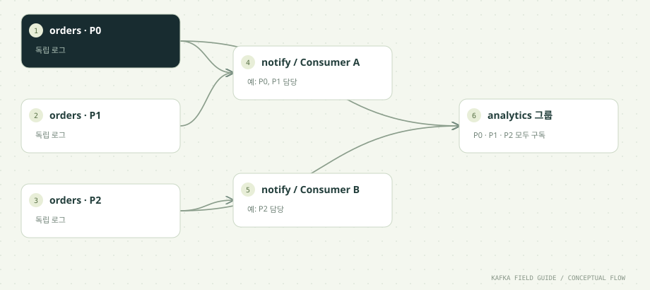

이 단원을 마치면
- 동일 그룹과 다른 그룹의 차이를 관찰한다
- 파티션 수와 Consumer 병렬성의 관계를 설명한다
- 리밸런싱 시 할당 변화를 읽는다
- 처음 읽는 그룹의 시작 위치(auto.offset.reset)와 그룹 시간 설정을 구분한다
01 / UNDERSTAND먼저, 원리를 이해합니다.
그룹은 하나의 논리적 구독자입니다
Consumer는 group.id 설정으로 자신이 속한 그룹을 밝힙니다. 같은 group.id를 가진 Consumer들은 하나의 구독자처럼 행동하며, 토픽의 각 파티션은 그룹 안에서 정확히 한 Consumer에게만 배정됩니다. 그래서 같은 그룹 안에서는 한 레코드가 한 Consumer에게만 전달되고, 일이 자연스럽게 나뉩니다.
이 구조에서 병렬성의 상한은 파티션 수입니다. 파티션이 3개면 같은 그룹의 Consumer를 3개까지는 늘릴수록 일을 나눠 맡지만, 4번째부터는 받을 파티션이 없어 놉니다. 노는 Consumer가 쓸모없지는 않습니다. 다른 Consumer가 죽으면 즉시 그 파티션을 넘겨받는 대기 인력이 됩니다.
한 Consumer는 여러 파티션을 맡을 수 있습니다. Consumer가 하나뿐이면 모든 파티션을 혼자 읽습니다. 01·02단원 실습에서 ASSIGNED [orders-0, orders-1, orders-2]가 출력된 이유입니다.
다른 그룹은 독립적으로 읽습니다
notification 그룹과 analytics 그룹은 같은 토픽을 구독해도 서로 영향을 주지 않습니다. 각 그룹은 파티션마다 '다음에 읽을 offset'을 따로 커밋하고, Kafka는 이 값을 그룹별로 보관합니다. 알림 그룹이 offset 120까지 읽었다고 통계 그룹의 위치가 바뀌지 않으며, 통계 그룹이 하루 멈춰 있어도 알림 그룹은 계속 진행합니다.
커밋된 offset은 브로커의 내부 토픽 __consumer_offsets에 저장됩니다. 일반 토픽과 똑같은 Kafka 로그이며, 그룹마다 담당 브로커(그룹 코디네이터)가 정해져 그 그룹의 가입·탈퇴·커밋을 관리합니다. 실습 중 topics 출력에 이 토픽이 보이더라도 직접 쓰거나 지우지 않습니다.
이 특성 때문에 '새 기능을 위해 같은 데이터를 처음부터 다시 읽고 싶다'면 기존 그룹을 건드리지 않고 새 group.id로 Consumer를 띄우면 됩니다. 운영 중인 그룹의 위치를 되돌리는 일은 부록 A1의 offset 재설정 명령으로 따로 다룹니다.
구성원이 바뀌면 할당을 조정합니다
그룹의 구성원이나 구독 대상이 바뀌면 파티션 배정을 다시 계산하는데, 이를 리밸런싱(rebalance)이라고 부릅니다. 리밸런싱이 일어나는 대표적인 상황은 다음과 같습니다.
- 새 Consumer 가입: 서버를 늘리거나 배포로 새 인스턴스가 뜰 때입니다.
- Consumer 정상 종료:
close()로 그룹을 떠나면 즉시 재배정합니다. - Consumer 장애: heartbeat가 세션 타임아웃 동안 끊기면 코디네이터가 그 Consumer를 그룹에서 제외합니다.
- 처리 지연:
poll()과 다음poll()사이가max.poll.interval.ms를 넘기면 Consumer 스스로 그룹을 떠납니다. - 토픽 변화: 구독 중인 토픽의 파티션이 늘어날 때입니다.
리밸런싱 동안에는 일부 또는 전체 파티션의 처리가 잠시 멈춥니다. 그리고 빼앗긴 파티션의 '처리는 했지만 커밋하지 못한' 레코드는 새 담당자가 마지막 커밋 위치부터 다시 읽으므로 중복 처리가 생길 수 있습니다. 이 과정의 Settings.subscribe()가 ConsumerRebalanceListener로 REVOKED와 ASSIGNED를 출력하는 이유는 이 순간을 눈으로 보기 위해서입니다. 정확한 배정 모양은 할당 전략(assignor)과 프로토콜에 따라 달라집니다.
느린 처리는 그룹 안정성에도 영향을 줍니다
Consumer가 살아 있다는 신호는 두 가지로 판단합니다. 하나는 백그라운드 스레드가 주기적으로 보내는 heartbeat로, session.timeout.ms 동안 끊기면 장애로 봅니다. 다른 하나는 애플리케이션이 poll()을 계속 호출하는지로, 두 poll() 사이가 max.poll.interval.ms(기본 5분)를 넘으면 처리가 멈춘 것으로 보고 그룹을 떠납니다.
두 번째 조건이 실무에서 자주 문제를 일으킵니다. 한 번의 poll()로 받은 레코드를 모두 처리하는 데 5분 넘게 걸리면, 프로세스는 멀쩡한데 그룹에서 빠지고 리밸런싱이 일어납니다. 처리 중이던 레코드는 커밋되지 못한 채 다른 Consumer가 다시 처리하고, 같은 일이 반복되면 그룹이 리밸런싱만 하며 진도를 못 나가기도 합니다.
대응 방법은 세 가지입니다.
- 한 번에 받는 양을 줄입니다:
max.poll.records(Kafka 기본값 500)를 줄이면 한 배치의 처리 시간이 짧아집니다. 이 실습은 관찰을 위해 10으로 둡니다. - 한 건의 처리 시간을 제한합니다: 외부 API 호출에 타임아웃을 둡니다.
- 스레드로 분리할 때는 완료 위치를 추적합니다:
KafkaConsumer는 스레드 안전하지 않으므로 한 스레드에서만 다루고, 작업 스레드가 끝낸 파티션별 위치만 커밋합니다.
처음 읽는 그룹은 어디서 시작할까요?
그룹이 어떤 파티션에 대해 커밋한 offset이 없으면 Consumer는 어디서부터 읽어야 할지 모릅니다. 이때 쓰는 규칙이 auto.offset.reset입니다. Kafka 4.3 문서 기준으로 쓸 수 있는 값은 네 가지입니다.
latest(Kafka 기본값): 지금 이후에 들어오는 레코드부터 읽습니다. 과거 데이터는 건너뜁니다.earliest: 보관 중인 가장 오래된 레코드부터 읽습니다. 이 실습의 설정값입니다.by_duration:<기간>: 현재 시각에서 지정한 기간만큼 앞선 위치부터 읽습니다.by_duration:PT1H는 '1시간 전부터'라는 뜻이며, 기간은 ISO 8601 형식으로 씁니다.none: 커밋 기록이 없으면 예외를 던집니다. 시작 위치를 반드시 명시적으로 정해야 하는 서비스에 씁니다.
이 규칙은 커밋 기록이 없을 때(또는 커밋된 위치가 보관 기간이 지나 사라졌을 때)만 적용됩니다. 이미 커밋 기록이 있는 그룹에 earliest를 설정해도 처음으로 돌아가지 않습니다. 새 서비스를 띄울 때 과거 데이터를 처리해야 하는지 먼저 정하고 이 값을 고릅니다.
시간순으로 따라가기: notify 그룹의 구성원이 바뀔 때
파티션 3개짜리 orders를 notify 그룹이 읽는 상황입니다. 이 실습처럼 클라이언트 설정을 바꾸지 않은 classic 프로토콜에서는 RangeAssignor가 쓰이며, 어느 Consumer가 어느 묶음을 받을지는 멤버 정렬 순서에 따라 달라집니다.
| 시점 | 일어나는 일 | Consumer A | Consumer B | 주의할 점 |
|---|---|---|---|---|
| T1 | A가 notify 그룹에 가입합니다. | ASSIGNED [orders-0, orders-1, orders-2] | 없음 | 혼자이므로 모든 파티션을 맡습니다. |
| T2 | B가 같은 그룹으로 가입해 리밸런싱이 시작됩니다. | REVOKED [orders-0, orders-1, orders-2] | 대기 | 기본 Range 방식은 기존 담당을 모두 내려놓고 다시 받습니다. |
| T3 | 새 배정이 끝납니다. | ASSIGNED [orders-0, orders-1] | ASSIGNED [orders-2] | 반대로 배정될 수도 있습니다. 한 파티션을 둘이 동시에 맡지는 않습니다. |
| T4 | 레코드가 들어와 각자 맡은 파티션을 처리합니다. | P0 · P1 처리 | P2 처리 | 두 Consumer의 처리 합계가 그룹 전체 처리량입니다. |
| T5 | A가 정상 종료합니다(입력이 25초 끊겨 스스로 끝나는 경우). | REVOKED [...] 후 종료 | REVOKED [orders-2] | 남은 B도 재배정을 위해 담당을 내려놓습니다. |
| T6 | 재배정이 끝납니다. | 없음 | ASSIGNED [orders-0, orders-1, orders-2] | A가 커밋하지 못한 레코드가 있었다면 B가 다시 처리합니다. |
Ctrl+C나 강제 종료처럼 close()를 거치지 못하고 사라지면 그룹을 떠난다는 신호를 보내지 못할 수 있습니다. 이때는 세션 타임아웃(이 실습은 10초)이 지나야 재배정이 시작됩니다.
Consumer 수에 따른 배정 예시 (파티션 3개)
| 같은 그룹의 Consumer 수 | 배정 예시 | 결과 |
|---|---|---|
| 1 | C1: P0, P1, P2 | 혼자 모두 처리합니다. 병렬성은 1입니다. |
| 2 | C1: P0, P1 / C2: P2 | 부하가 2:1로 나뉩니다. 파티션 수가 Consumer 수로 나누어떨어지지 않으면 불균등합니다. |
| 3 | C1: P0 / C2: P1 / C3: P2 | 가장 고르게 나뉩니다. 병렬성의 상한입니다. |
| 4 | C1~C3: 하나씩 / C4: 배정 없음 | C4는 놀지만, 다른 Consumer가 빠지면 즉시 파티션을 넘겨받습니다. |
아래 '데이터 흐름' 절의 시뮬레이터로 Consumer 수를 바꿔 보세요. 실제 배정은 assignor에 따라 다를 수 있습니다.
그룹 동작에 영향을 주는 설정: Kafka 기본값과 이 실습의 값
이 실습은 장애 실험 결과를 빠르고 반복 가능하게 보기 위해 일부 값을 바꿨습니다(Settings.consumerProperties). 운영 값은 처리 특성과 네트워크에 맞게 정합니다.
| 설정 | Kafka 기본값 | 이 실습의 값 | 의미 |
|---|---|---|---|
group.protocol | classic | classic | 그룹 리밸런스 프로토콜입니다. consumer로 바꾸면 KIP-848 새 프로토콜을 씁니다. |
session.timeout.ms | 45000 (45초) | 10000 (10초) | heartbeat가 이만큼 끊기면 장애로 보고 그룹에서 제외합니다. classic에서만 쓰입니다. |
heartbeat.interval.ms | 3000 (3초) | 3000 | heartbeat를 보내는 주기입니다. classic에서만 쓰입니다. |
max.poll.interval.ms | 300000 (5분) | 300000 | 두 poll() 사이의 최대 간격입니다. 넘기면 Consumer가 그룹을 떠납니다. |
max.poll.records | 500 | 10 | 한 번의 poll()로 받는 최대 레코드 수입니다. |
auto.offset.reset | latest | earliest | 커밋 기록이 없을 때의 시작 위치입니다. |
enable.auto.commit | true | false | 자동 커밋 여부입니다. 이 실습은 처리 후 직접 커밋합니다(05단원). |
partition.assignment.strategy | RangeAssignor, CooperativeStickyAssignor | 기본값 | 클라이언트 쪽 할당 전략 목록입니다. 앞의 것이 우선입니다. |
한 걸음 더: 함께 알아둘 개념
기본 흐름을 이해했다면, 실무에서 곧바로 마주치는 관련 개념을 이어서 정리합니다.
할당 전략(assignor)과 eager · cooperative 리밸런싱
classic 프로토콜에서는 그룹의 리더 Consumer가 할당 전략에 따라 배정을 계산합니다. Kafka가 제공하는 클라이언트 쪽 전략은 다음과 같습니다.
- RangeAssignor: 토픽별로 파티션을 순서대로 잘라 연속된 묶음으로 나눕니다. 파티션 3개를 둘이 나누면 2개와 1개가 됩니다.
- RoundRobinAssignor: 모든 파티션을 Consumer에게 돌아가며 하나씩 나눠 줍니다.
- StickyAssignor: 고르게 나누되, 리밸런싱 전후로 기존 배정을 최대한 유지합니다.
- CooperativeStickyAssignor: Sticky와 같은 배정을 cooperative 방식으로 수행합니다.
리밸런싱 방식도 두 가지입니다. eager 방식은 리밸런싱이 시작되면 모든 Consumer가 맡던 파티션을 전부 내려놓고 새 배정을 기다립니다. 그동안 그룹 전체가 멈춥니다. cooperative(점진적) 방식은 실제로 담당이 바뀌는 파티션만 내려놓으므로, 나머지 파티션은 처리를 계속합니다. 대신 배정이 몇 차례에 걸쳐 수렴합니다.
Kafka 4.3의 기본 목록은 RangeAssignor, CooperativeStickyAssignor 순서이며, 모든 구성원이 지원하는 전략 중 앞의 것을 씁니다. 그래서 별도 설정이 없는 이 실습에서는 Range 방식으로 동작하고, B가 가입할 때 A가 세 파티션을 모두 REVOKED하는 모습을 볼 수 있습니다.
새 Consumer 리밸런스 프로토콜 (KIP-848)
Kafka 4.0부터 새 리밸런스 프로토콜(consumer)이 정식(GA)으로 제공됩니다. 공식 문서는 이 프로토콜이 완전히 점진적이고 그룹 전체를 멈추는 동기화 지점이 없어서, 확장성이 좋고 리밸런싱이 빠르다고 설명합니다. 가장 큰 차이는 배정 계산을 브로커(그룹 코디네이터)가 한다는 점입니다.
- 켜는 방법: 브로커는 4.0부터 자동으로 지원하지만, 클라이언트는
group.protocol=consumer를 지정해야 사용합니다. 기본값은 여전히classic입니다. - 서버 쪽 assignor: 기본 제공은
uniform(기본값)과range입니다. 클라이언트는group.remote.assignor로 다른 것을 고를 수 있습니다. 기존의RangeAssignor는range에, Sticky 계열과 RoundRobin은uniform에 대응합니다. - 쓸 수 없는 클라이언트 설정:
session.timeout.ms,heartbeat.interval.ms,partition.assignment.strategy는 새 프로토콜에서 쓰이지 않습니다. 세션과 heartbeat 값은 브로커 설정(group.consumer.session.timeout.ms,group.consumer.heartbeat.interval.ms)이 정합니다. - 전환: 그룹이 비어 있을 때 바꾸는 오프라인 방식과, 새 설정의 Consumer를 차례로 배포하는 온라인 방식이 있습니다.
Kafka 4.3부터는 classic 프로토콜을 쓰는 Consumer가 새 프로토콜을 권하는 로그를 남기며, classic은 향후 릴리스에서 deprecated될 예정이라고 안내합니다. 이 실습은 세션 타임아웃을 클라이언트에서 10초로 고정해 장애 실험을 빠르게 재현하려고 일부러 classic을 지정했습니다. 새 프로젝트라면 새 프로토콜을 우선 검토하세요.
정적 멤버십(static membership): 재시작해도 자리를 지키기
기본적으로 Consumer는 재시작할 때마다 새 멤버로 취급되어, 내려갈 때 한 번, 다시 올라올 때 한 번 리밸런싱을 일으킵니다. 인스턴스가 많은 그룹에서 순차 배포를 하면 리밸런싱이 연달아 일어나 처리가 자주 멈춥니다.
group.instance.id에 인스턴스마다 고유하고 변하지 않는 값(예: 파드 이름)을 지정하면 그 Consumer는 정적 멤버가 됩니다. 정적 멤버가 짧게 재시작하고 세션 타임아웃 안에 돌아오면, 코디네이터는 그 자리를 비워 두었다가 같은 파티션을 그대로 돌려주는 것이 이 기능의 목적입니다. 같은 group.instance.id를 가진 인스턴스는 그룹에 동시에 하나만 있을 수 있습니다.
대신 진짜 장애가 났을 때는 세션 타임아웃이 지날 때까지 그 파티션을 아무도 처리하지 않습니다. 세션 타임아웃을 길게 잡을수록 배포는 부드러워지지만 장애 감지는 늦어지는 균형을 고려해야 합니다.
02 / FOLLOW THE EVENT데이터의 이동을 따라갑니다.


원리를 이해하기 위한 단계 모델입니다. 네트워크 시간이나 장애 판정을 재현하지 않습니다.
Consumer 수를 바꿔 보세요
파티션은 3개입니다. 예시 분배이며 실제 assignor의 배정 결과와 다를 수 있습니다. 일반 Consumer Group 기준입니다.
03 / READ THE CODE현업 패턴을 코드로 읽습니다.
아래 코드는 함께 제공된 실행 소스에서 발췌했습니다. 전체 클래스와 설정은 소스 파일에서 확인할 수 있습니다.
while (!Settings.timedOut(last, consumer) && (max == 0 || count < max)) {
var records = consumer.poll(Duration.ofMillis(500));
for (var record : records) {
System.out.printf("RECEIVED group=%s key=%s partition=%d offset=%d value=%s%n",
group, record.key(), record.partition(), record.offset(), record.value());
if (delay > 0) Thread.sleep(delay);
Settings.commitOne(consumer, record);
last = System.nanoTime();
if (++count == max) break;
}
}소스: 초급/src/main/java/study/kafka/OrderConsumer.java · 18행부터
group.id는Settings.consumerProperties에서 첫 번째 인자로 설정합니다. 같은 이름을 주면 같은 구독의 구성원이 됩니다.ASSIGNED와REVOKED로그는Settings.subscribe()에 등록한ConsumerRebalanceListener가 출력합니다. 리밸런싱 시점의 할당 변화를 보여 줍니다.poll(Duration.ofMillis(500))은 레코드가 없으면 최대 0.5초 기다렸다 빈 결과를 돌려줍니다. 루프는 계속poll()을 호출해야 그룹에 살아 있다고 인정받습니다.- 개별 레코드 처리 후 해당 파티션의 다음 offset만 커밋하므로, 아직 처리하지 않은 poll 배치를 넘겨 커밋하지 않습니다. 네 번째 인자
delayMs는 레코드마다 기다려 느린 처리를 흉내 냅니다.
04 / MAKE IT REAL이제, 직접 확인합니다.
PowerShell에서 저장소 루트로 이동한 뒤 실행하세요. 01단원의 up → build → init이 선행되어야 합니다. 종료된 환경은 up으로 다시 시작합니다. 이후 단원의 max=0은 입력이 끊긴 뒤 25초까지 읽습니다. 대응 실습 안내 파일 ↗
01. 터미널 A
.\실습\study.ps1 run consumer notify-demo 0 orders 500Consumer가 실행됩니다. 기록이 없으면 25초 뒤 종료하므로 이어지는 명령을 바로 실행하세요.
ASSIGNED [orders-0, orders-1, orders-2]
RECEIVED group=notify-demo key=order-2 partition=0 offset=0 value={...}
RECEIVED group=notify-demo key=order-2 partition=0 offset=1 value={...}notify-demo는 처음 쓰는 그룹이라 earliest 규칙에 따라 01·02단원에서 쌓인 기록부터 읽습니다. 마지막 인자 500 때문에 레코드마다 0.5초씩 기다리므로 출력이 천천히 올라옵니다. 혼자 가입했으니 세 파티션을 모두 배정받습니다.
이 Consumer는 밀린 기록을 처리하느라 한동안 바쁘므로, 그사이에 터미널 B를 띄우면 리밸런싱을 관찰하기 좋습니다.
02. 터미널 B
.\실습\study.ps1 run consumer notify-demo 0 orders 500동일 그룹으로 가입하고 ASSIGNED 로그가 바뀝니다.
B가 가입하면 두 터미널에 다음과 같은 변화가 나타납니다(어느 쪽이 어떤 묶음을 받는지는 실행마다 다를 수 있습니다).
# 터미널 A
REVOKED [orders-0, orders-1, orders-2]
ASSIGNED [orders-0, orders-1]
# 터미널 B
ASSIGNED [orders-2]A가 세 파티션을 모두 REVOKED한 뒤 일부만 다시 받는 모습이 eager 방식의 Range 배정입니다. 리밸런싱 이후 A는 P0·P1의 레코드만, B는 P2의 레코드만 출력합니다. 다만 이 과정의 key 3개는 P2에 배정되지 않으므로(02단원), P2만 맡은 쪽은 레코드를 하나도 받지 못할 수 있습니다. 고장이 아니라 key 분포 때문입니다. 같은 partition 번호가 두 터미널에 동시에 나타나지 않는지 확인하세요. B는 P2의 마지막 커밋 위치부터 읽으므로, A가 P2에서 이미 처리하고 커밋한 레코드는 다시 읽지 않습니다.
03. 터미널 C
.\실습\study.ps1 run consumer analytics-demo 0 orders다른 그룹은 기록 전체를 독립적으로 읽습니다.
ASSIGNED [orders-0, orders-1, orders-2]
RECEIVED group=analytics-demo key=order-2 partition=0 offset=0 value={...}
...analytics-demo는 notify 그룹과 다른 그룹이므로 리밸런싱에 끼지 않고, 혼자서 세 파티션을 모두 배정받습니다. 지연 인자가 없어 기존 기록을 빠르게 다 읽은 뒤 새 레코드를 기다립니다. A나 B의 출력에는 아무 변화도 일어나지 않는다는 점이 '독립 구독'의 증거입니다.
04. 터미널 D
.\실습\study.ps1 run producer 60 orders day03notify 그룹 두 Consumer의 처리 합계와 analytics 그룹의 처리량을 비교합니다.
60건이 들어오면 세 터미널이 동시에 반응합니다. 각 Consumer는 입력이 25초 동안 끊기면 REVOKED와 함께 CONSUMED <개수>를 출력하고 종료합니다.
# 예시: A가 P0·P1을 맡은 경우
# 터미널 A: CONSUMED 75 / 터미널 B: CONSUMED 0 / 터미널 C: CONSUMED 75비교할 것은 A와 B의 합계 ≈ C의 개수입니다. 01~03단원 명령만 실행했다면 orders에는 75건(3 + 12 + 60)이 있고, notify 그룹은 이 레코드들을 둘이 나눠 처리했으며 analytics 그룹은 혼자 전부 처리했기 때문입니다. 리밸런싱 도중 커밋하지 못한 레코드가 있었다면 notify 쪽 합계가 조금 더 클 수 있습니다.
B가 0건이어도 고장이 아닙니다. 이 과정의 key 3개는 partition 0과 1에만 배정되므로(02단원), P2만 맡은 Consumer에게는 줄 레코드가 없습니다. 반대로 B가 P0·P1을 받았다면 B가 대부분을 처리하고, A는 B가 가입하기 전에 혼자 읽은 만큼만 셉니다. Consumer 수를 늘려도 key 분포가 고르지 않으면 일은 고르게 나뉘지 않습니다. 02단원의 핫 파티션 문제가 여기서 그대로 드러납니다. A와 B 중 먼저 끝난 쪽이 그룹을 떠나면, 남은 쪽에서 다시 REVOKED/ASSIGNED가 출력되는 것도 확인해 보세요.
한 걸음 더 실험하기
- A와 B의
ASSIGNED파티션이 같은 시점에 겹치는지 확인하세요. 겹치지 않아야 정상입니다. - 동일 그룹 Consumer를 4개 실행해 할당이 비어 있는(
ASSIGNED []) Consumer를 찾아보세요. - 실행 중 하나를 Ctrl+C로 종료하고 남은 Consumer의
REVOKED/ASSIGNED로그가 나오기까지 걸린 시간을 재 보세요. 입력이 끊겨 스스로 종료할 때(정상close())와 비교하면 세션 타임아웃의 역할이 보입니다. .\실습\study.ps1 groups --describe --group notify-demo를 실행 중에 호출해 CONSUMER-ID 열로 파티션 담당자를 확인해 보세요.
05 / APPLY IT로그 수집 파이프라인에 적용하면
같은 개념이 대용량 장비 로그 수집(수집 에이전트 → 수집 서버 → Kafka → 로그 저장소)에서는 어떻게 쓰이는지 정리합니다. 특정 회사나 장비가 아닌 일반적인 구성을 기준으로 합니다.
저장용 · 알람용 Consumer Group을 나누고, 파티션 수 안에서 늘립니다
장비 로그 파이프라인에서는 같은 로그 토픽을 목적이 다른 여러 그룹이 읽는 구성이 흔합니다.
- 저장 그룹(예:
log-writer): 로그를 로그 저장소에 적재합니다. 처리량이 중요하므로 인스턴스를 여러 개 띄워 파티션을 나눠 맡깁니다. - 알람 그룹(예:
log-alert): 오류 패턴을 찾아 알림을 보냅니다. 저장 그룹과 다른 group.id를 쓰므로, 저장소 적재가 밀려도 알람은 따로 진행합니다.
유입량이 늘어 저장 그룹이 뒤처지면 인스턴스를 늘리면 되지만, 파티션 수를 넘어서는 인스턴스는 일하지 않습니다. 로그 저장소가 Kafka를 직접 구독하는 기능(예: ClickHouse의 Kafka 테이블 엔진)을 써도 마찬가지로, ClickHouse 문서는 한 Consumer Group의 Consumer 수가 토픽의 파티션 수를 넘을 수 없다고 안내합니다.
배치 적재 시간도 그룹 안정성에 영향을 줍니다. 저장소에 수천 건씩 묶어 넣는 Consumer가 저장소 지연으로 한 배치에 5분 넘게 걸리면 max.poll.interval.ms를 넘겨 그룹에서 빠지고, 같은 배치를 다른 인스턴스가 다시 적재하는 중복이 생깁니다. 배치 크기를 저장소 응답 시간에 맞춰 제한하고, 저장소 호출에는 타임아웃을 둡니다.
인스턴스를 자주 배포한다면 리밸런싱으로 수집이 끊기는 시간을 줄이는 것도 중요합니다. 새 리밸런스 프로토콜(group.protocol=consumer)이나 정적 멤버십을 검토할 만한 이유입니다.
06 / CHECK YOUR UNDERSTANDING설명할 수 있으면, 내 지식입니다.
자주 묻는 질문
Consumer를 파티션 수보다 많이 띄우면 어떻게 되나요?
남는 Consumer는 파티션을 배정받지 못하고(ASSIGNED []) 대기합니다. 처리량은 늘지 않지만, 다른 Consumer가 장애로 빠지면 리밸런싱으로 즉시 그 파티션을 넘겨받으므로 대기 인력 역할을 합니다. 처리량을 더 늘리려면 파티션 수부터 늘려야 합니다(02단원의 주의점 참고).
리밸런싱 중에 메시지가 유실되나요?
레코드는 Kafka에 그대로 남아 있으므로 유실되지 않습니다. 다만 리밸런싱 동안 처리가 잠시 멈추고, 이전 담당자가 처리했지만 커밋하지 못한 레코드는 새 담당자가 다시 처리합니다. 즉 위험은 유실보다 지연과 중복입니다. 반대로 처리하기 전에 커밋하는 코드라면 리밸런싱 때 레코드를 건너뛸 수 있습니다(05단원).
earliest로 바꿨는데 처음부터 읽히지 않아요.
그 그룹에 이미 커밋된 offset이 있기 때문입니다. auto.offset.reset은 커밋 기록이 없을 때만 쓰입니다. 실습에서는 새 group 이름을 쓰는 것이 가장 간단하고, 운영 중인 그룹의 위치를 옮겨야 한다면 Consumer를 모두 멈춘 뒤 kafka-consumer-groups.sh --reset-offsets로 재설정합니다(부록 A1).
Share Group은 Consumer Group과 무엇이 다른가요?
Share Group(Kafka Queues, KIP-932)은 Kafka 4.2에서 운영 환경에서 쓸 수 있는 상태가 된 별도 소비 모델입니다. 파티션을 한 Consumer에게 통째로 맡기는 대신 레코드 단위로 여러 Consumer에게 나눠 주므로, 파티션 수보다 많은 Consumer가 함께 일할 수 있습니다. 그 대신 파티션 단위의 순서 처리를 기대하기 어렵습니다. 순서보다 작업 분배가 중요한 경우를 위한 모델이며, 이 과정은 다루지 않습니다.
알림과 통계가 각각 모든 이벤트를 받아야 할 때 group.id는?
원리를 읽고 실습 결과를 확인했나요?
학습 기록은 이 브라우저에만 저장됩니다.